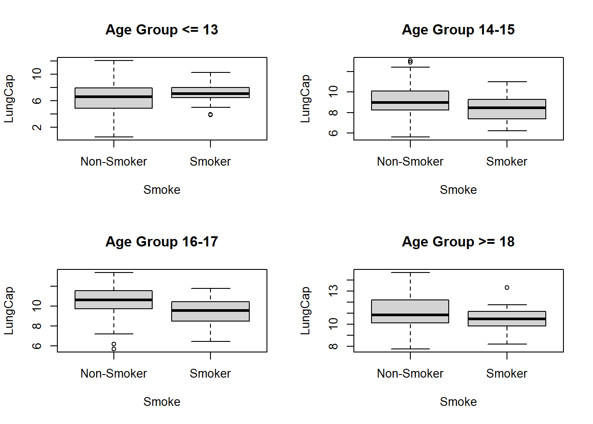

# A tibble: 6 × 6
LungCap Age Height Smoke Gender Caesarean
<dbl> <dbl> <dbl> <chr> <chr> <chr>
1 6.48 6 62.1 no male no
2 10.1 18 74.7 yes female no
3 9.55 16 69.7 no female yes
4 11.1 14 71 no male no
5 4.8 5 56.9 no male no
6 6.22 11 58.7 no female no
The distribution of LungCap looks as follows:
Code
hist(df$LungCap)
The histogram suggests that the distribution is close to a normal distribution. Most of the observations are close to the mean. Very few observations are close to the margins (0 and 15).
update and comit check
Code
# Subset the data frame by gendermale_df <- df[df$Gender =="male", ]female_df <- df[df$Gender =="female", ]# Create separate boxplots for males and femalesboxplot(male_df$LungCap, female_df$LungCap, names =c("Male", "Female"),xlab ="Gender", ylab ="Lung Capacity",main ="Lung Capacity by Gender")
age_group_1 <- df[df$Age <=13, ]age_group_2 <- df[df$Age >=14& df$Age <=15, ]age_group_3 <- df[df$Age >=16& df$Age <=17, ]age_group_4 <- df[df$Age >=18, ]par(mfrow=c(2,2)) # Set up a 2x2 grid of plotsboxplot(LungCap ~ Smoke, data = age_group_1, names =c("Non-Smoker", "Smoker"),main ="Age Group <= 13")boxplot(LungCap ~ Smoke, data = age_group_2, names =c("Non-Smoker", "Smoker"),main ="Age Group 14-15")boxplot(LungCap ~ Smoke, data = age_group_3, names =c("Non-Smoker", "Smoker"),main ="Age Group 16-17")boxplot(LungCap ~ Smoke, data = age_group_4, names =c("Non-Smoker", "Smoker"),main ="Age Group >= 18")

Code
# Calculate the mean and standard deviation of Lung Capacity for each age group and smoking statusagg_data <-aggregate(LungCap ~ Age + Smoke, data = df, FUN =function(x) c(mean =mean(x), sd =sd(x)))agg_data
Age Smoke LungCap.mean LungCap.sd
1 3 no 2.9466923 1.7725478
2 4 no 2.9416667 1.1691521
3 5 no 3.4987500 1.4349371
4 6 no 4.4610000 1.4426914
5 7 no 4.6202703 1.7044248
6 8 no 5.2743902 1.5602933
7 9 no 6.6743750 1.4851993
8 10 no 6.5861702 1.3697906
9 11 no 7.4325000 1.5284734
10 12 no 7.7471311 1.5590134
11 13 no 8.2700820 1.6003504
12 14 no 8.7785000 1.4940444
13 15 no 9.4663636 1.5326404
14 16 no 10.0577778 1.4230731
15 17 no 11.0492187 1.5239153
16 18 no 10.8475000 1.4681731
17 19 no 11.2585714 1.6228260
18 10 yes 5.9812500 1.4073283
19 11 yes 7.5156250 2.1181586
20 12 yes 6.7464286 0.9939849
21 13 yes 7.8968750 1.1576174
22 14 yes 7.8291667 1.7020147
23 15 yes 8.7666667 1.1875000
24 16 yes 8.8972222 1.3884819
25 17 yes 9.7818182 1.1881756
26 18 yes 10.3903846 1.2926692
27 19 yes 11.3125000 0.6187184
#Question 2 # Let X = number of prior convictions for prisoners at a state prison at which there are 810 prisoners.
X 0 1 2 3 4
Frequency 128 434 160 64 24
a) What is the probability that a randomly selected inmate has exactly 2 prior convictions?
Code
# P(x=2)= 160/810# P(x) = 0.1975# p(x) = 19.75%
b) What is the probability that a randomly selected inmate has fewer than 2 prior convictions?
Code
# Frequency of X=0 + Frequency of X=1 = 128 + 434 = 562# p(x) = 562/810# P(x) = 0.6938 or 69.38%# Probability = 69.38%
c) What is the probability that a randomly selected inmate has 2 or fewer prior convictions?
Code
# Frequency of X=0 + Frequency of X=1 + Frequency of X=2 = 128 + 434 + 160 = 722# P(X ≤ 2) = frequency of X≤2 / total number of inmates# 722/810 = 0.8914# probability = 0.8914 or 89.14%
d) What is the probability that a randomly selected inmate has more than 2 prior convictions?
Code
# Frequency of X=3 + Frequency of X=4 = 64 + 24 = 88# P(X > 2) = frequency of X>2 / total number of inmates# 88/810 = 0.1086# Probability = 0.1086 or 10.86%
e) What is the expected value1 for the number of prior convictions?
Code
# E(X) = Σ(xi * pi)# (0 * 128/810) + (1 * 434/810) + (2 * 160/810) + (3 * 64/810) + (4 * 24/810)# 1.283# Expected value for the number of prior convictions is 1.283.
f) Calculate the variance and the standard deviation for the Prior Convictions
---title: "Homework - 1"author: "Thrishul"description: "Homework 1"date: "02/05/2023"format: html: toc: true code-fold: true code-copy: true code-tools: truecategories: - hw1 - desriptive statistics - probability---# Question 1## aFirst, let's read in the data from the Excel file:```{r, echo=T}library(readxl)library(tidyverse)df <-read_excel("_data/LungCapData.xls")head(df)```The distribution of LungCap looks as follows:```{r, echo=T}hist(df$LungCap)```The histogram suggests that the distribution is close to a normal distribution. Most of the observations are close to the mean. Very few observations are close to the margins (0 and 15).update and comit check```{r, echo=T}# Subset the data frame by gendermale_df <- df[df$Gender =="male", ]female_df <- df[df$Gender =="female", ]# Create separate boxplots for males and femalesboxplot(male_df$LungCap, female_df$LungCap, names =c("Male", "Female"),xlab ="Gender", ylab ="Lung Capacity",main ="Lung Capacity by Gender")``````{r}no_smoke <- df[df$Smoke =="no",]yes_smoke <- df[df$Smoke =="yes",]mean(no_smoke$LungCap)mean(yes_smoke$LungCap)``````{r}``````{r}age_group_1 <- df[df$Age <=13, ]age_group_2 <- df[df$Age >=14& df$Age <=15, ]age_group_3 <- df[df$Age >=16& df$Age <=17, ]age_group_4 <- df[df$Age >=18, ]par(mfrow=c(2,2)) # Set up a 2x2 grid of plotsboxplot(LungCap ~ Smoke, data = age_group_1, names =c("Non-Smoker", "Smoker"),main ="Age Group <= 13")boxplot(LungCap ~ Smoke, data = age_group_2, names =c("Non-Smoker", "Smoker"),main ="Age Group 14-15")boxplot(LungCap ~ Smoke, data = age_group_3, names =c("Non-Smoker", "Smoker"),main ="Age Group 16-17")boxplot(LungCap ~ Smoke, data = age_group_4, names =c("Non-Smoker", "Smoker"),main ="Age Group >= 18")``````{r}# Calculate the mean and standard deviation of Lung Capacity for each age group and smoking statusagg_data <-aggregate(LungCap ~ Age + Smoke, data = df, FUN =function(x) c(mean =mean(x), sd =sd(x)))agg_data```#Question 2# Let X = number of prior convictions for prisoners at a state prison at which there are 810 prisoners.# X 0 1 2 3 4# Frequency 128 434 160 64 24# a) What is the probability that a randomly selected inmate has exactly 2 prior convictions?```{r}# P(x=2)= 160/810# P(x) = 0.1975# p(x) = 19.75%```# b) What is the probability that a randomly selected inmate has fewer than 2 prior convictions?```{r}# Frequency of X=0 + Frequency of X=1 = 128 + 434 = 562# p(x) = 562/810# P(x) = 0.6938 or 69.38%# Probability = 69.38%```# c) What is the probability that a randomly selected inmate has 2 or fewer prior convictions?```{r}# Frequency of X=0 + Frequency of X=1 + Frequency of X=2 = 128 + 434 + 160 = 722# P(X ≤ 2) = frequency of X≤2 / total number of inmates# 722/810 = 0.8914# probability = 0.8914 or 89.14%```# d) What is the probability that a randomly selected inmate has more than 2 prior convictions?```{r}# Frequency of X=3 + Frequency of X=4 = 64 + 24 = 88# P(X > 2) = frequency of X>2 / total number of inmates# 88/810 = 0.1086# Probability = 0.1086 or 10.86%```# e) What is the expected value1 for the number of prior convictions?```{r}# E(X) = Σ(xi * pi)# (0 * 128/810) + (1 * 434/810) + (2 * 160/810) + (3 * 64/810) + (4 * 24/810)# 1.283# Expected value for the number of prior convictions is 1.283.```# f) Calculate the variance and the standard deviation for the Prior Convictions```{r}# Var(X) = E(X^2) - [E(X)]^2# E(X^2) = Σ(xi^2 * pi)# P(X=x) 128/810 434/810 160/810 64/810 24/810# E(X^2) = Σ(xi^2 * pi)# = (0^2 * 128/810) + (1^2 * 434/810) + (2^2 * 160/810) + (3^2 * 64/810) + (4^2 * 24/810)# = 2.105# VARIANCE# Var(X) = E(X^2) - [E(X)]^2# = 2.105 - (1.283)^2# variance for the number of prior convictions is = 0.921# STANDARD DEVIATION# SD(X) = sqrt(Var(X))# = sqrt(0.921)# = 0.960# ```